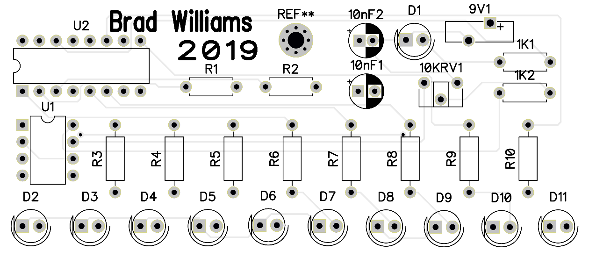
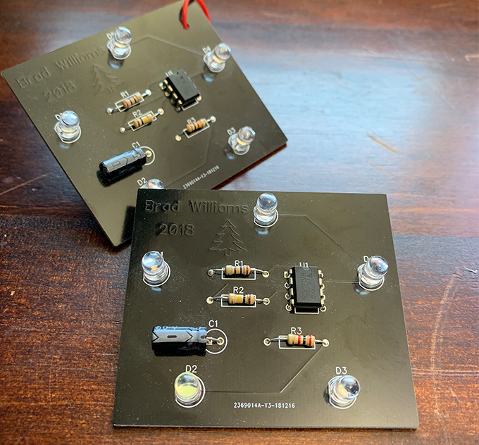

Brad Williams
2019 Christmas PCB Showcase
Because last year's Christmas PCB was all the rave, I have
decided to start a tradition. From this page I will condense the process
I went through to design the Christmas PCB of 2019 while
sharing the improvements since last year.

After contemplating other ideas, I settled with
a LED Chaser Ornament whose frequency can be varied
by a potentiometer.
The main reason I chose this is because I have recently been learning
from books like Feynman Lectures on Computation and TTL Cookbook
how transistors function on every level and how Integrated Circuits are made. I am fascinated
by both of these topics and have decided to attain a greater uunderstanding by building and analyzing a
circuit using ICs as a Counter (cd4017 IC) and a VCO (Voltage Controlled Oscillator 555).
...more in-depth analysis later, this will not be added to the homepage until completion.
--- The software used in this project is KiCad and I have found that it is not my favorite,
compared to DipTrace which was used last year, KiCad felt vastly inferior.
--- The solder mask is white with lead free pads because I admire
the white-on-silver contrast. I have also added a hole at the top-middle of
the board for convenient hanging. No image is included like last years but the
text is clear to see against the background and is not under the mask like last year's.

the white-on-silver contrast. I have also added a hole at the top-middle of the board for convenient hanging. No image is included like last years but the text is clear to see against the background and is not under the mask like last year's.
PCB 2018